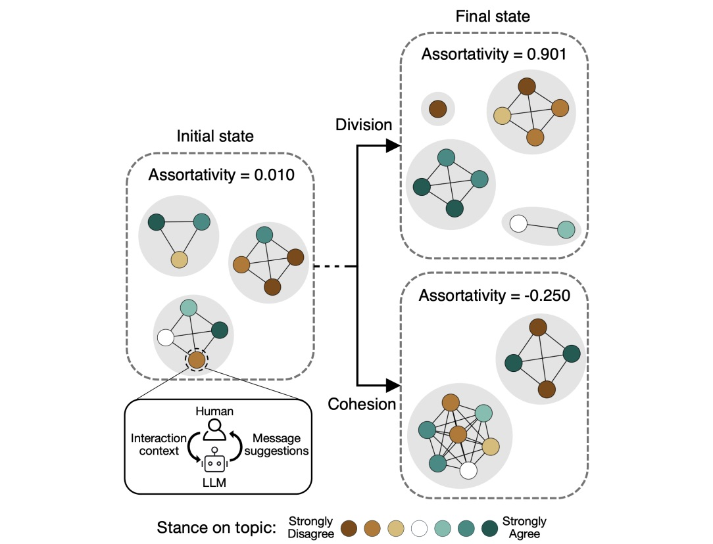
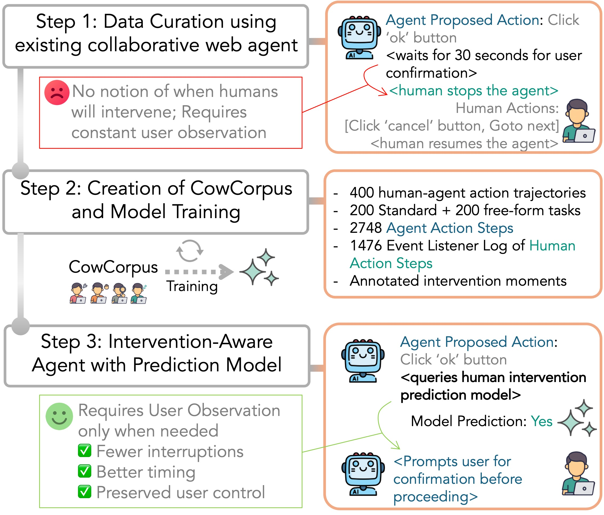
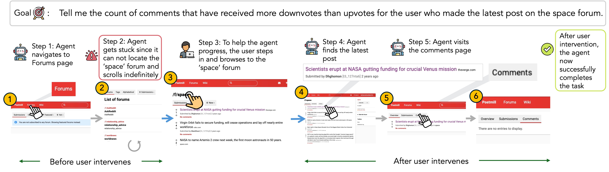
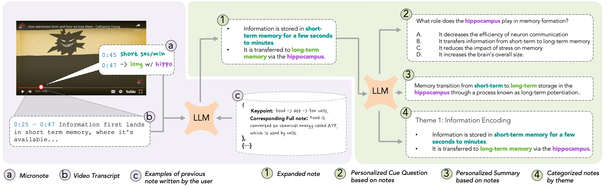

I design interactive agent systems that let people and AI coordinate effectively on complex web tasks.
Representative work: CowPilot, PlowPilot
I study how agents can model user preferences, interaction styles, and partial human input to become better collaborators.
Representative work: NoTeeline, CowPilot, PlowPilot
I investigate how AI mediation reshapes group structure, information sharing, and decision quality in opinion-diverse teams.
Representative work: AI-Mediated Communication Reshapes Social Structure in Opinion-Diverse Groups
I build AI interfaces that support real-world tasks such as note-taking, information retrieval, and adaptive assistance.
Representative work: NoTeeline, What’s Important Here?, DreamStruct

AI-Mediated Communication Reshapes Social Structure in Opinion-Diverse Groups
F Huq, E Claggett, H Shirado
Studies how AI mediation changes network structure and collaboration dynamics in diverse groups.
Preprint Under Review, 2026.

Modeling Distinct Human Interaction in Web Agents
F Huq*, ZZ Wang*, Z Guo, VA Arangarajan, T Ou, FF Xu, S Zhou, G Neubig, JP Bigham
Examines how human web behavior differs from agent behavior and why those differences matter for agent design.
Preprint Under Review, 2026.

CowPilot: A Framework for Autonomous and Human-Agent Collaborative Web Navigation
F Huq, ZZ Wang, FF Xu, T Ou, S Zhou, JP Bigham*, G Neubig*
Introduces a framework for studying how people and web agents share control during real task execution.
Project Page NAACL Demo Track, 2025.

NoTeeline: Supporting Real-Time Notetaking from Keypoints with Large Language Models
F Huq*, A Samee*, DC Lin, XA Tang, JP Bigham
Builds a note-taking assistant that expands user keypoints into personalized notes in real time.
Preprint IUI 2025.
For a full list of completed and ongoing projects, visit my google scholar page.